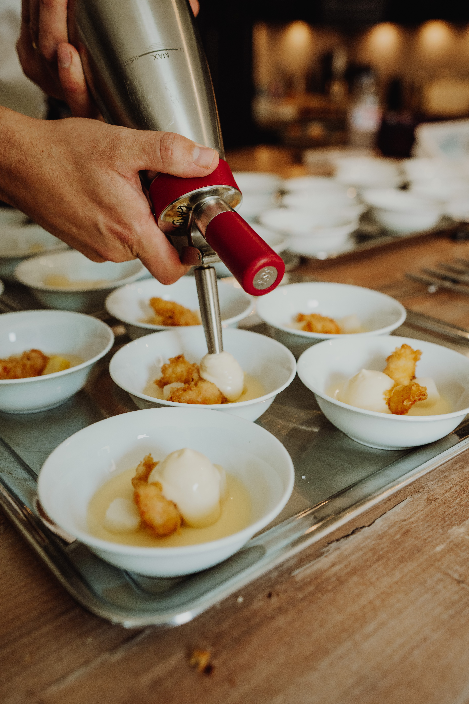
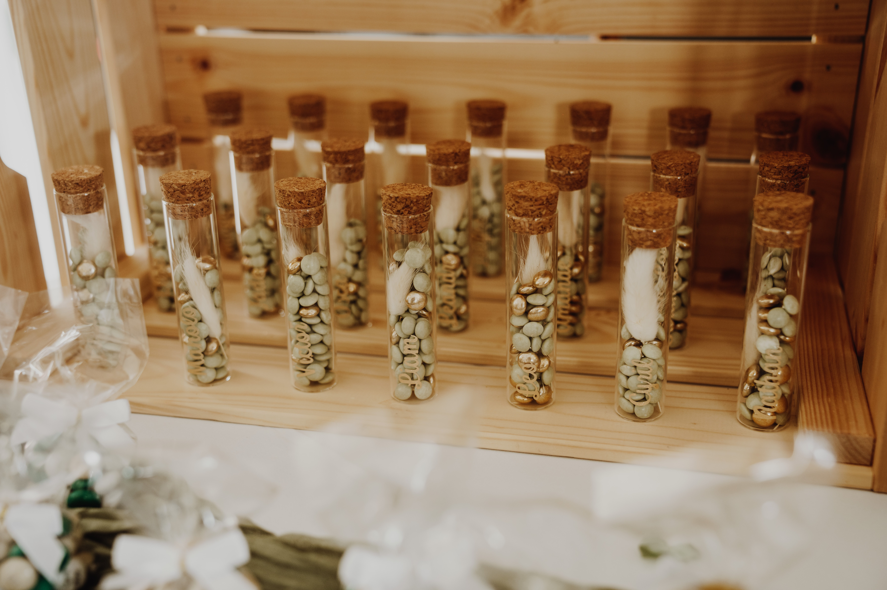

Baptême & Communion
Célébrez les grands jalons de la vie de vos enfants en toute sérénité.

Une douceur raffinée
Les réunions de famille autour d'un baptême ou d'une communion méritent un écrin de douceur. Nous concevons des décors délicats basés sur des palettes de couleurs épurées, des matières nobles et des compositions florales subtiles qui subliment votre salle de réception ou votre jardin familial.
De la carterie sur-mesure aux boîtes de dragées ou cadeaux souvenirs personnalisés pour vos parrains, marraines et invités, chaque détail fait l'objet d'une attention rigoureuse.
Le sens de l'accueil familial
Parce que ces journées passent à une vitesse folle, CYOS coordonne la logistique en coulisses. Traiteur pour un grand buffet convivial, un brunch ensoleillé ou un repas assis raffiné : nous sélectionnons l'option idéale pour combler toutes les générations.
Nous prévoyons également des espaces de jeux sécurisés pour les enfants pour permettre aux adultes de savourer pleinement ces retrouvailles chaleureuses.
Organiser une célébration